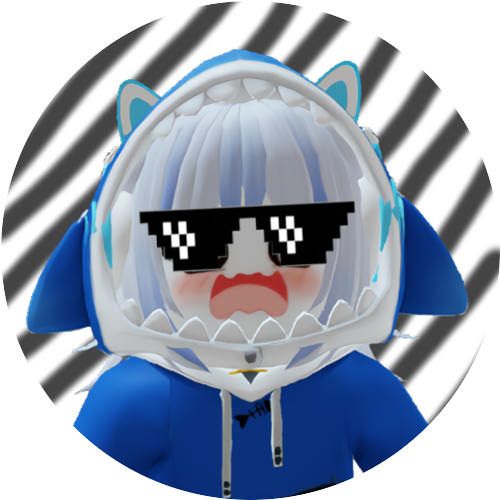
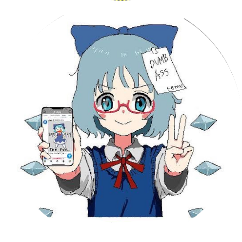
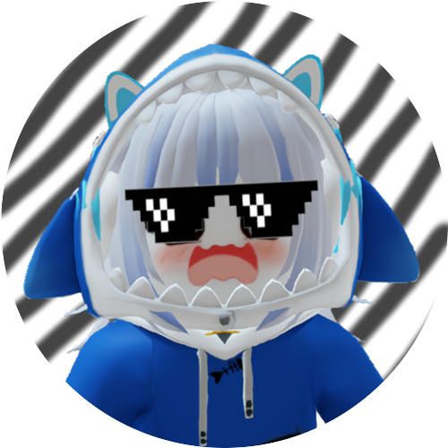
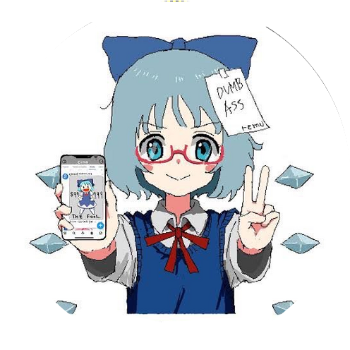

Members


 





職員一覧
yumin（職員ID:HHSK-KB-YQL-001）
yuna（職員ID:STSK-FSY-YQL-002）
Riku（職員ID:HHSK-KR-YQL-003）
そらくん*Sorakun.（職員ID:HHSK-SM-YQL-004）
Kanon（職員ID:GJSK-KN-YQL-005）
Nooooooo（職員ID:GJSK-NO-YQL-006）
MiyakojimaCam（職員ID:GJSK-MC-YQL-007）
KiryuCamera（職員ID:HHSK-KC-YQL-008）
ゆっくりねい（職員ID:GJSK-ZN-YQL-012）
AkikazeYoru(職員ID:HHSK-AY-YQL-013)
ゆらさん / Yurakun（職員ID:HHSK-YR-YQL-014）
あいしぃー（職員ID:HHSK-AS-YQL-015）
hurakuma（職員ID:HHSK-HK-YQL-016）
アッキー（職員ID:HHSK-AI-YQL-017）
あきかき(職員ID:HHSK-AK-YQL-018)